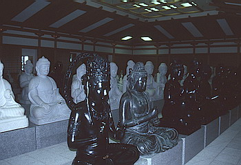

越前大仏/福井県勝山市
昭和62年に落慶した大師山清大寺は越前大仏、別名「出世大仏」のおわす寺だ。
創設者は地元出身のタクシー王、多田清氏。大実業家である。
ここはずばり観光地である。しかも隣町の永平寺などと違い、最初っから観光施設としてスタートしている寺なのである。
で、観光といえば客寄せが必要である。
ただでさえ辺鄙なこの町に普通のお寺つくったって誰も来ないでしょう。という訳で大仏の出番である。
こうして珍寺がひとつ出来上がっていくのであーる。
しかし、大仏といって安易に奈良の大仏さんをパクるのも気が引けたのか、ここの大仏さんのモデルは中国洛陽の龍門奉先寺座像であるらしい。後にも述べるがその他の仏像もすべてインドや中国のスタイルのものなのだ。
つまり「俺っちの寺は超ビッグスケールだから奈良とか鎌倉の大仏とか日本の仏教界とかそんな小さなモンには興味ないわけよ」というスタイルを貫いているのだ。
しかし、パンフの隅々に「奈良の大仏を凌ぐ」とか「東大寺大仏殿よりひとまわり大きい」とか「日本一の五重の塔」などとやけに日本一にこだわる記述もあり、そんな千年も前の人達相手にムキにならなくても・・・とも思えたりもするのだが。

それはさておき、境内の様子なのだが、仁王像が睨みをきかせる大門、中門の右側には大理石や鋳物で出来たインド風仏像が並ぶ百仏殿。
なんか博物館で仏像見てるみたいで味気ない。やっぱり建物も仏像も全くの新品だからなのだろう。
で、門の奥に件の大仏殿がある。
大仏殿は東大寺大仏殿にクリソツ。しかし内部は壁面一杯に1281体の石仏や金仏がおさめられており、結構グッとくる。
脇侍仏も立派。
そしてなにより正面の壁に窓がたくさん付いており内部が明るいのが最大の特徴か。
二階に登れて正面から大仏の顔を拝めるのも大仏マニアには嬉しいところ。
しかし大仏のすぐ裏手に仏具搬入用のフォークリフトが停めてあるのが渋い。ビッグスケールである。
そしてもうひとつの見どころは「京都、東寺よりも高い」（パンフより）高さ75ｍの五重の塔。エレベーターで一気に最上階まで行けるお手軽さはさすが観光寺。
眼下の大仏殿と平成生まれの勝山城というニ大フェイク建築のツーショットが堪能出来る。
4階から2階までは中央に体育会系のマッチョ仏像群がいい汗かきながら皆さんのお越しをお待ちしている。あ、金仏だから湿気で結露してたのか。
この寺、観光用の寺だけあって門前に土産屋がずらりと並んでいるのだが、その店も要チェック。大仏グッズ専門の専門店などもありイヤゲもの好きの方にはおすすめのスポットである。
情報提供はへりおすさんです
1998.5.
珍寺大道場 HOME